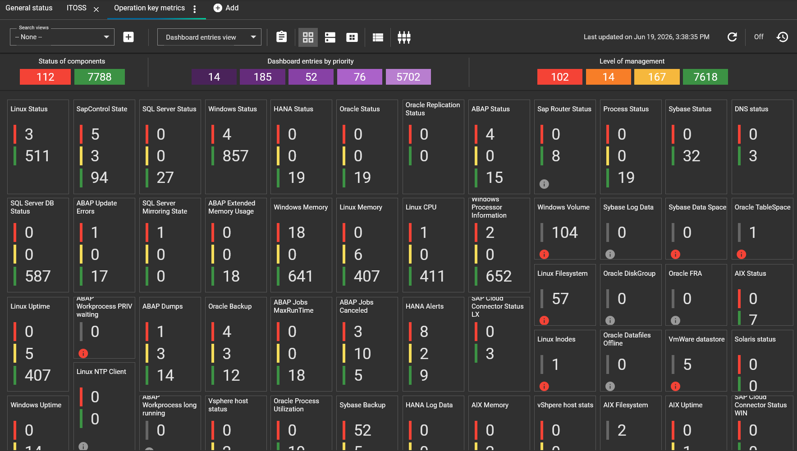

Focused on IT Service Providers
Managed Service Providers
Ideal for IT providers for a deep operational management of their clients
- Native multi-tenant
- Per-client visibility
- Role-based access
- Centralized operations
Complete customer visibility into infrastructure performance with effortless deployment.

ITOSS gives IT service providers everything they need to run their clients' operations — metrics, automation, reporting and SAP, working together with shared data and real-time context.
Ideal for IT providers for a deep operational management of their clients
Processing key metrics, automatizes notifications, corrective actions, reporting and other operation tasks
Microservices-based architecture, ready to use in just minutes
Ideal for operation centers with diverse management and support profiles
Includes interfaces and knowledge for SAP ecosystem management, Linux, Windows and most database vendors
Complete operation means providing a fully integrated operational platform that delivers real-time KPI analysis, end-to-end lifecycle management, precise activity tracking, always-on operational status, a robust customer operations database, and built-in performance, configuration, and security capabilities.
Our application is actively optimizing Key Performance Indicators (KPIs), ensuring efficient and real-time analysis.
Efficient life cycle management is underway in our application, ensuring seamless progression and functionality.
Our application is adept at precise tracking, providing real-time insights into user activities.
Our app is currently operational, ensuring an optimal and uninterrupted user experience.
Facilitating seamless operations, our application maintains a robust customer database, ensuring efficient organization and accessibility of customer-related information.
Exceling in performance, configuration, security, and other essential aspects, the application ensures top-notch functionality.
Book a 30-minute guided demo with a consultant. We'll walk you through real MSP use cases and how they'd apply to your operation.